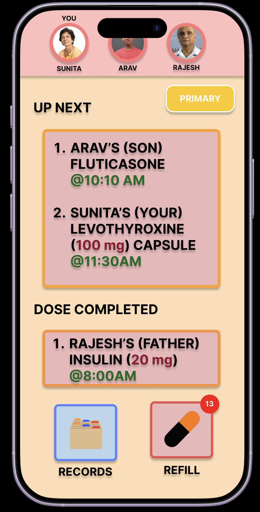
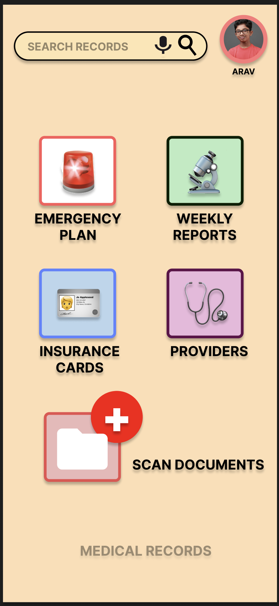
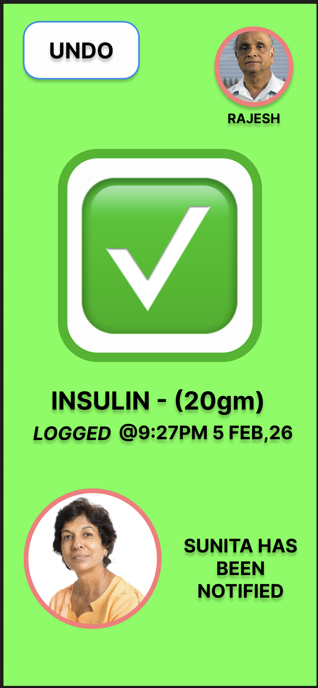

Interference with hardware Notch.
Usability Testing
Validating the interface with real-world hardware and accessibility constraints.
The Testing Plan
To ensure the prototype functions for both high-stress caregivers (Sunita) and senior users (Rajesh), I conducted moderated "Think-Aloud" sessions focusing on the following goals:
- Hardware Compliance: Ensuring UI elements aren't obscured by modern phone notches.
- User Control: Checking for clear navigation paths and "exit" strategies on all sub-pages.
- Confidence: Validating that senior users feel "safe" when logging critical medicine.
Detailed Findings
Issues identified during Task 01: Profile Switching and Task 02: Medication Logging.

Issue: Hardware Notch
"The front camera notch actually covers the Arav button. I had to tap blindly near the top edge to get it to work."
Participant Answer
Users struggled to identify who was currently active because the hardware "Black Notch" sat directly over the persona switcher.
Actionable Fix
Lowered the entire top navigation bar by 50px to clear the safe-area margins.

Issue: Navigation Dead-End
"I feel trapped. Once I'm in the Records page, there's no way to go back without restarting the app."
Participant Answer
Testers expected a standard iOS "Back" chevron. Without it, they felt anxiety about losing their place in the app.
Actionable Fix
Implemented a global "Back" button on all sub-screens to ensure a clear linear path.

Issue: Tactile Accessibility
"The 'Undo' button is way too small. If I made a mistake logging my insulin, I'd be stressed I couldn't hit it."
Participant Answer
Senior participants appreciated the logging confirmation but found the "Safety Net" (Undo) physically difficult to interact with.
Actionable Fix
Enlarged the Undo button to a 48px touch target and added a high-contrast border for visibility.
Iteration Summary
Feature
Pain Point
V2 Improvement
Top Bar
Lowered placement to "Safe Zone".
Navigation
Missing "Back" buttons on sub-pages.
Added universal Back chevrons.
Undo Action
Tiny touch target for senior users.
Enlarged button to 48px height.